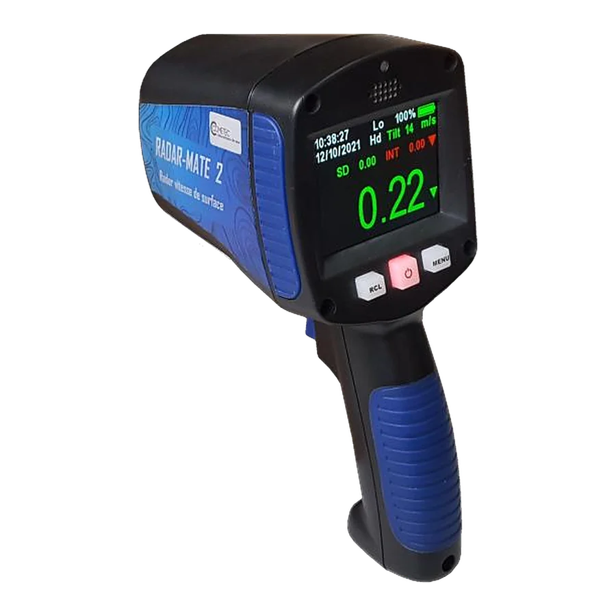
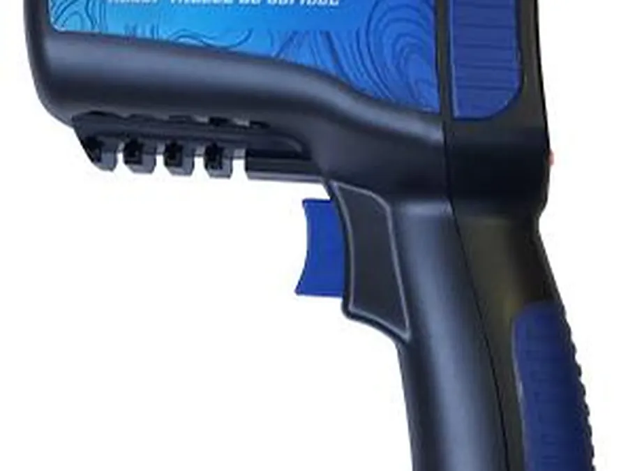

Débitmètres · Mesure ponctuelle
RADAR-MATE 2Radar portable de mesure de vitesse de surface
La vitesse d’un cours d’eau mesurée à distance, depuis la berge ou un pont, en toute sécurité. Du ruisseau au fleuve, et jusque dans les réseaux d’assainissement, en visant l’eau depuis le tampon ouvert.
- Vitesse
- 0,1 à 33 m/s
- Précision
- 1 % de la mesure
- Inclinaison
- Corrigée de 0 à 60°
- Poids
- 800 g
Idéal pour
- Jaugeage en crue
- Rivières et fleuves
- Canaux d’irrigation
- Assainissement sans descendre
- Contrôles ponctuels
LeasingDisponible à l’achat ou en leasing, par mensualités. Comment ça marche
Points forts
Un outil de terrain pour mesurer là où l’accès au lit pose un problème de sécurité.
- Sans contactMesure à distance, depuis la berge, un pont ou un tampon ouvert.
- En crueLa vitesse se mesure quand il serait dangereux d’entrer dans l’eau.
- Correction automatiqueL’inclinomètre intégré corrige la mesure jusqu’à 60° par rapport à l’horizontale.
- Mesure en 5 secondesLa vitesse s’affiche et s’enregistre automatiquement, datée.
- 32 000 mesuresMémoire interne, relecture à l’écran, transfert sur PC par USB.
- Jusqu’à une semaineBatterie Li-Ion rechargeable en USB : 10 h en continu, environ une semaine en utilisation type.
Principe de mesure
L’utilisateur se place dans l’axe de l’écoulement et vise la surface de l’eau. Le radar de 35,5 GHz mesure le décalage de fréquence de l’onde renvoyée par la surface : c’est la vitesse de surface.
L’inclinomètre corrige automatiquement l’angle vertical. Si la visée se fait en biais depuis la berge, l’angle horizontal se saisit en degrés pour corriger la mesure.
- Mode Lo : 0,1 à 8,5 m/s · mode Hi : 0,2 à 33 m/s
- Affichage de la vitesse, de l’inclinaison et du spectre
- Rail Picatinny pour pointeur laser ou trépied
Applications
Pour les mesures ponctuelles de vitesse, en milieu naturel comme en réseau.
- Rivières et fleuvesMesure depuis un pont ou la berge, du ruisseau au fleuve.
- Crues et forts débitsMesure à distance quand l’accès au lit est dangereux.
- Canaux d’irrigationContrôles rapides sur les canaux à surface libre.
- Réseaux d’assainissementMesure depuis le tampon ouvert, sans descendre dans le regard.
Caractéristiques
Appareil autonome, livré avec son câble USB de recharge et de transfert.
| Gamme, mode Lo | 0,1 à 8,5 m/s |
|---|---|
| Gamme, mode Hi | 0,2 à 33 m/s |
| Précision | 1 % de la mesure |
| Résolution | 0,01 m/s |
| Correction verticale | Automatique par inclinomètre, 0 à 60° |
| Angle horizontal | Réglable de 0 à 60° par pas de 5° |
| Antenne | Bande K, 35,5 GHz, faisceau de 12°, polarisation circulaire |
| Afficheur | LCD couleur 2,8″, rétroéclairage |
|---|---|
| Enregistrement | Chaque mesure enregistrée et datée, 32 000 points |
| Transfert | Fichier .txt sur PC par USB |
| Batterie | Li-Ion 4 700 mAh, recharge en 5 h par USB |
| Autonomie | 10 h en continu, 26 h en intermittent |
| Boîtier | ABS et polycarbonate, IP55 |
| Dimensions | 216 × 89 × 132 mm, 800 g |
| Température | − 30 à 70 °C |
Téléchargements
Questions fréquentes
Les questions que nous posent le plus souvent les exploitants et les bureaux d’études.
Peut-on mesurer depuis la berge, en biais ?
Oui. L’inclinaison verticale est corrigée automatiquement ; l’angle horizontal entre la visée et l’écoulement se saisit au clavier pour corriger la vitesse.
Le RADAR-MATE 2 donne-t-il le débit ?
Il mesure la vitesse de surface, point par point. Le débit se calcule ensuite avec la section mouillée, comme pour un jaugeage.
Peut-on l’utiliser en réseau d’assainissement ?
Oui : il suffit d’ouvrir le tampon et de viser l’écoulement, sans descendre dans le regard.
Comment récupérer les mesures ?
Chaque mesure est enregistrée et datée (32 000 points). Le câble USB transfère les mesures choisies sur PC, en fichier texte.